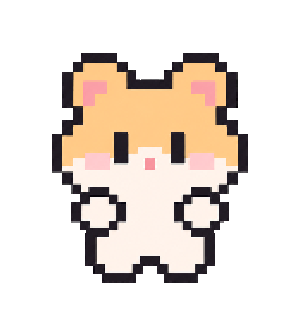

STEP 1
두근두근, 어떤 친구가 찾아올까요?
손잡이를 돌려 나만의 데스크톱 메이트를 만나보세요.
26종의 데스크톱 메이트 · 중복 없는 뽑기귀여움은 기본, 필요한 기능까지 챙겨주는
나만의 데스크톱 메이트.
여러 앱을 오갈 필요 없이,
하나의 앱으로 필요한 기능을 데스크톱에서 바로 사용해 보세요.
손잡이를 돌려 나만의 데스크톱 메이트를 만나보세요.
26종의 데스크톱 메이트 · 중복 없는 뽑기시간 관리부터 메모장까지, 일상에 필요한 10가지 기능.
귀여운 친구가 든든한 데스크톱 메이트로 변신해요.

10가지 기능을 하나씩 살펴보세요.
화면 왼쪽 또는 오른쪽, 원하는 곳에 배치해 보세요.
필요할 때마다 곁에서 편리한 기능을 꺼내 쓸 수 있어요.
13종의 동물, 저마다 다른 26가지 매력.
어떤 친구가 내 데스크톱에 찾아올까요?
여러 앱을 오갈 필요 없이, 필요한 기능을 하나의 앱에서!
데스크톱 어디서든 간편하게 사용해 보세요.
점심과 퇴근까지, 기다리는 시간을 함께 세어요.

연결한 기능은 바꿀 수 없어요. 메이트에게 맡길 역할을 신중하게 골라주세요.
macOS · macOS 26 이상의 Apple Silicon(M1 이후) Mac에서 사용할 수 있으며, Mac App Store로 배포할 예정이에요. Intel Mac 지원 여부는 정식 배포 때 확정해 안내할게요.
Windows · 64비트 Windows 10·11용이에요. 실행에 필요한 .NET Framework 4.8은 Windows 10 2019년 5월 업데이트(버전 1903) 이후와 Windows 11에 기본으로 들어 있어요. 32비트 Windows에는 설치할 수 없고, ARM 기반 Windows PC 지원 여부는 정식 배포 때 확정해 안내할게요.
메모·일정·클립보드 등 도구에 입력한 내용은 사용 중인 컴퓨터에 저장돼요. 계정과 보유 캐릭터·연결 기능은 서버에서 관리해요. 도구 내용의 기기 간 동기화는 제공하지 않아요.
공개 배포가 시작된 뒤 처음 설치할 때 보일 수 있는 안내예요. Twigly 설치 파일은 아직 코드 서명이 되어 있지 않아서 Windows가 '알 수 없는 게시자'로 표시할 수 있어요. 이 페이지의 다운로드 안내로 받은 파일이 맞다면 창에서 '추가 정보'를 누른 뒤 '실행'을 선택해 주세요. 어디서 받았는지 확실하지 않은 파일은 실행하지 말고 이 페이지에서 다시 받아주세요.
정상적인 설치 파일이어도 새로 배포된 프로그램은 Windows 보안이 위험 항목으로 잘못 판단하는 경우가 있어요. 먼저 이 페이지에서 받은 파일이 맞는지 확인한 뒤 아래 순서대로 시도해 주세요.
1. Windows 보안 → 바이러스 및 위협 방지 → 보호 기록에서 Twigly 관련 차단 항목을 열고 '허용'을 선택해요.
2. 그래도 설치되지 않으면 바이러스 및 위협 방지 설정의 '설정 관리'에서 '실시간 보호'를 잠시 끈 다음 설치해 주세요. 대부분 이 방법으로 해결돼요.
3. 설치가 끝나거나 실패하면 바로 '실시간 보호'를 다시 켜주세요. 꺼둔 채로 두면 PC가 위험해질 수 있어요.
V3, 알약 같은 다른 백신을 쓰고 있다면 같은 방식으로 실시간 감시를 잠시 멈추거나 Twigly 설치 파일을 예외로 등록해 주세요. 출처를 확인할 수 없는 파일은 보안 기능을 끄고 실행하지 마세요.
은행·공공기관 사이트를 이용할 때 함께 설치되는 보안 프로그램 중 TouchEn nxWeb이 설치를 방해하는 경우가 있어요. 설정 → 앱(설치된 앱 또는 앱 및 기능)에서 TouchEn nxWeb(TouchEn_nxWeb_Installer32로 보일 수도 있어요)을 제거하고 PC를 다시 시작한 뒤 설치 파일을 다시 실행해 주세요. 제거한 프로그램은 해당 사이트에 다시 접속하면 설치 안내가 나와요.
아래 순서대로 다시 시도해 주세요.
1. 작업 표시줄 오른쪽 알림 영역(^)의 Twigly 아이콘을 오른쪽 클릭해 '종료'를 누르거나, 작업 관리자에서 Twigly를 종료해요.
2. PC를 다시 시작한 뒤 이 페이지에서 받은 최신 설치 파일을 다시 실행해요.
3. 그래도 안 되면 위 질문을 참고해 Windows 보안이나 백신이 막고 있지 않은지 확인해요.
설치 폴더나 남은 파일은 직접 지우지 마세요. 복구가 더 어려워질 수 있어요. 해결되지 않으면 오류 화면을 캡처해 아래 '문의하기'로 보내주세요. 계정과 보유 메이트는 서버에서 관리하기 때문에 다시 설치해도 사라지지 않아요.
Twigly는 창을 닫아도 알림 영역(트레이)에서 계속 실행돼요. 이미 실행 중일 때 다시 열면 새로 실행되지 않고 열려 있던 Twigly를 불러와요. 먼저 작업 표시줄 오른쪽 알림 영역(^)에 Twigly 아이콘이 있는지 확인하고 클릭해 보세요. 아이콘이 없고 시작 메뉴의 'Twigly'로도 열리지 않으면 Windows 보안의 보호 기록이나 사용 중인 백신에서 Twigly가 차단되지 않았는지 확인하고 '허용'해 주세요.
Windows용 Twigly는 64비트 Windows 10·11 전용이에요. 설정 → 시스템 → 정보에서 '시스템 종류'가 64비트 운영 체제인지 확인해 주세요. 32비트 Windows에는 설치할 수 없어요. Windows 10이라면 같은 화면의 'Windows 사양'에서 버전이 1903 이후인지도 확인해 주세요. 이 버전부터 실행에 필요한 .NET Framework 4.8이 기본으로 들어 있어요. 관리자 권한 없이 지금 사용 중인 Windows 계정에 설치되고, 정식 지원 범위는 공개 배포 때 설치 안내와 함께 알려드릴게요.
찾으시는 답변이 없나요? 언제든 편하게 문의해 주세요.